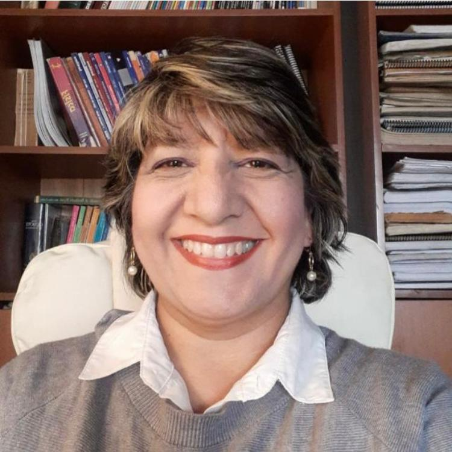

Carolina Calderón M.
28 años de experiencia laboral. Docente Universitaria en pregrado y postgrado | Directora Docente de facultad | Directora de Registro Estudiantil | He trabajado y colaborado en la mejora continua de procesos académicos, planes de estudios, planificación, asesorías, acreditación nacional e internacional, evaluación por competencias, implantación de SAP área académica | He diseñado y ejecutado proyectos de automatización. | He diseñado, mejorado e implementado flujos y procesos académicos estudiantiles transversales| He administrado y gestionado presupuesto anual.
NOMBRE: Carolina Calderón Moya
FECHA DE NACIMIENTO: 19 de febrero de 1969
TELÉFONO: +56958348727
DNI: 10111111-5
ANTECEDENTES ACADÉMICOS
1996/1998 - Universidad Mayor. Magíster en Pedagogía Universitaria.
1986/1991 - Universidad de Santiago de Chile. Profesor de Estado en Educación Matemática y Computación
ANTECEDENTES LABORALES
2010/2022 Universidad Mayor. Dirección de Registro Estudiantil (DRE). Jefe y Director de la DRE (ex Oficina de Registro Estudiantil ORE)
2006/2010 - Universidad Mayor. Facultad de Comunicación y Diseño. Docente y Directora Docente
2004/2007 - Universidad de Santiago de Chile. Escuela de Diseño. Coordinadora Académica de Diplomados.
1994/2013 - Universidad Mayor. Docente de Computación, distintos software de diseño y multimedia, para Arquitectura, Comunicación y Diseño. TICs, Offimática y Bases de Datos para Escuelas de Ingeniería Comercial; Medicina; Enfermería, Obstetricia y Puericultura y Derecho.
LOGROS
Creé la Dirección de Registro Estudiantil para una universidad en Chile, diseñé e implementé procesos y flujos de procedimientos académicos estudiantiles que permitieron mejorar la retención estudiantil y la titulación oportuna.
Diseñé e implementé el repositorio documental digital de los estudiantes de una Universidad.
Diseñé e implementé la certificación con firma electrónica avanzada en una Universidad.
Creé programas de Diplomados en Multimedia y TICs para docentes. Y otras asignaturas orientadas al uso de la TICs y Bases de Datos para carreras de pregrado.
ideré la gestión del cambio y capacitación, incluyendo desarrollo de manuales durante la implantación de SAPCampus y SAP Hana para una Universidad.
Para tener más información puedes dirigirte a Linkdln